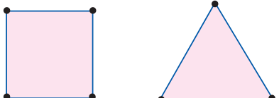
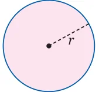
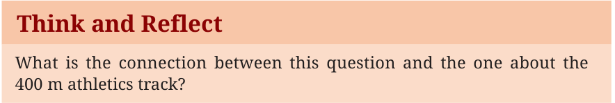
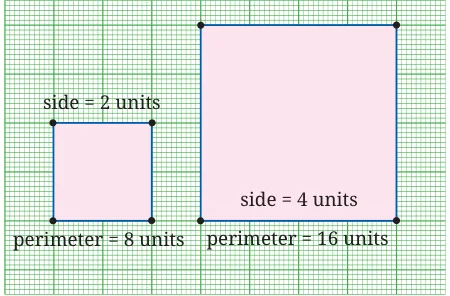
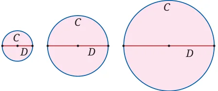

Given any shape, its perimeter is the total length around its border. Imagine a tiny insect going for a walk around its border, never turning around, till it returns to its starting point. The perimeter of the shape is the total distance it travels.

So, a square with side \(a\) units has perimeter \(4a\) units. An equilateral triangle with side \(a\) units has perimeter \(3a\) units.
The perimeter of a rectangle with length \(a\) units and width \(b\) units is \(2(a + b)\) units. Note that the formula for the perimeter of a square is a ‘special case’ of the formula for the perimeter of a rectangle with \(a = b\).

Here we see a circle with radius \(r\) units. What is its perimeter? How do we find out?

To answer the question about the perimeter of the circle, we must go step by step. What happens to the perimeter of a square if we double its side? It doubles too. The ratio of perimeter to the side is 4:1; this is so for all squares. As the side of the square gets larger (or smaller), the ratio of perimeter to side stays fixed at 4:1.

For equilateral triangles, the ratio of perimeter to the side is 3:1. As the side of the equilateral triangle gets larger (or smaller), the ratio of perimeter to side stays fixed at 3:1.

What about a circle? What is its perimeter (usually called the circumference) in terms of its diameter?
Is the ratio of circumference (\(C\)) to diameter (\(D\)) the same for circles of all sizes (Fig. 6.5)? What do you think?